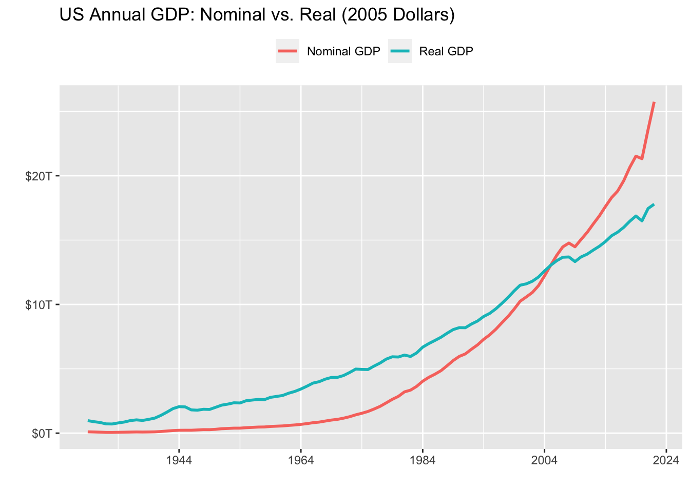

library(tidyverse)
library(httr)
library(jsonlite)
api_bea_key <- Sys.getenv('api_bea_key')
bea_nipa_tables <- GET(
glue::glue(
'https://apps.bea.gov/api/data?UserID={api_bea_key}&method=GetParameterValues&datasetname=NIPA&ParameterName=tablename&ResultFormat=JSON'
)
) %>%
content(as = 'text') %>%
fromJSON() %>%
pluck(1,2,1)5 Deflating nominal values to real values
Essential tools for modern economic analysis
We saw earlier in this section that it’s important to seasonally adjust a time series so that we can make meaningful comparisons between two time periods. Similarly, nominal time series (those denominated in current prices) should be deflated to real values in order to remove the effect due only to price changes over time. Knowing how to carry out this operation is mandatory because many economic time series are not available in real terms from the source.
To transform nominal data into real data, two things are needed. First, we have to choose the base (or reference) year. The prevailing prices in that year will be used as a reference for other years. For example, we can transform a sample of the US nominal GDP from 2000 to 2020 using 2010 prices as reference. In this case, all the years in the sample will be denominated in 2010 prices. This is generally an arbitrary choice, but a good practice is to choose a year in which prices have been close to the sample average.
More importantly, we need to choose an appropriate price index to use as the deflator. The ideal deflator should be the one that best measures the change in prices of the basket of goods or services represented by the series we want to adjust. For instance, it would make no sense to deflate a series of retail sales by a construction price index. In the absence of a specific price index for the basket of goods considered in the retail sales series, we could use a more general consumer price index as a proxy.
Let’s see a practical example of how to deflate a series. For this, we will use data on nominal GDP for the United States provided by the Bureau of Economic Analysis (BEA). It’s also a good opportunity to introduce how to access data from this relevant source using its APÌ service.
You’ll need to register in order to receive access to the API. This procedure takes a few minutes and requires little information. Since this information is personal, I stored my key as an environmental variable.
BEA provides a detailed document explaining how to use the API resources. Below, I’ll first retrieve the table names from the NIPA data base, where GDP data are stored. Note that I use the pluck function from the purrr package as a substitute for [[.1 This makes it easier to access the lower-level elements of lists.
We can see that the two tables of interest are T10105 (Gross Domestic Product) and T10104 (Price Indexes for Gross Domestic Product). Given that the import procedure is the same for both series, it makes sense to create a function with the necessary steps and then use map to apply it to each table name.
bea_tables <- list(
'Nominal GDP' = 'T10105',
'Deflator' = 'T10104'
)
get_bea_data <- function(tablename, api_bea_key){
api_bea_request <- glue::glue(
'https://apps.bea.gov/api/data?UserID={api_bea_key}&method=GetData&DataSetName=NIPA&TableName={tablename}&Frequency=A&Year=ALL&ResultFormat=json'
)
gdp_request <- GET(url = api_bea_request)
gdp_content <- content(gdp_request, as = 'text')
gdp_list <- fromJSON(gdp_content, flatten = FALSE)
gdp_tbl <- pluck(gdp_list, 1, 2, 4)
}
bea_data <- map(
.x = bea_tables,
.f = ~ get_bea_data(.x, api_bea_key)
)Next, I arrange the data in tidy format to facilitate future calculations.
bea_data_tbl <- map(
.x = bea_data,
.f = ~ .x %>%
filter(LineDescription == 'Gross domestic product') %>%
select(TimePeriod, DataValue)
) %>%
plyr::ldply(.id = 'Serie') %>%
pivot_wider(names_from = Serie, values_from = DataValue) %>%
mutate(across(c(`Nominal GDP`), ~ str_remove_all(.x, ','))) %>%
mutate(across(-TimePeriod, ~ .x %>% as.numeric())) %>%
arrange(TimePeriod)
bea_data_tbl# A tibble: 94 x 3
TimePeriod `Nominal GDP` Deflator
<chr> <dbl> <dbl>
1 1929 104556 9.39
2 1930 92160 9.03
3 1931 77391 8.14
4 1932 59522 7.21
5 1933 57154 7.01
6 1934 66800 7.36
7 1935 74241 7.50
8 1936 84830 7.60
9 1937 93003 7.87
10 1938 87352 7.73
# ... with 84 more rowsNow we are ready to convert nominal GDP into real GDP. For this, all we have to do is to pick an arbitrary year as reference, say 2005, and divide the whole price index series by its value in 2005. This means that the price index in 2005 is equal to 1 and other values are in proportion to it. Finally, we divide the nominal GDP series by this new price index series.
gdp_real <- bea_data_tbl %>%
mutate(
Deflator_2005 = (Deflator/Deflator[which(TimePeriod == 2005)]),
`Real GDP` = `Nominal GDP`/Deflator_2005
)Show the code
library(lubridate)
gdp_real %>%
pivot_longer(-TimePeriod, names_to = 'var', values_to = 'value') %>%
filter(str_detect(var, 'Deflator', negate = TRUE)) %>%
mutate(TimePeriod = as_date(TimePeriod, format = '%Y')) %>%
ggplot(aes(x = TimePeriod)) +
geom_line(aes(y = value, color = var), lwd = 1) +
scale_y_continuous(labels = scales::dollar_format(scale = 1/1e6, prefix = "$", suffix = "T")) +
scale_x_date(date_breaks = '20 years', date_labels = '%Y') +
theme(legend.position = 'top') +
labs(
title = 'US Annual GDP: Nominal vs. Real (2005 Dollars)',
y = '',
x = '',
color = ''
)
It’s clear that ignoring price changes leads to a gross misinterpretation of the GDP growth trajectory. This is precisely the kind of thing we want to avoid when adjusting the series for inflation.
pluck(.x, 1,2,1)is equivalent to.x[[1]][[2]][[1]]↩︎